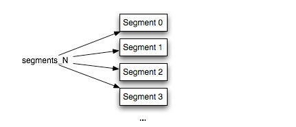
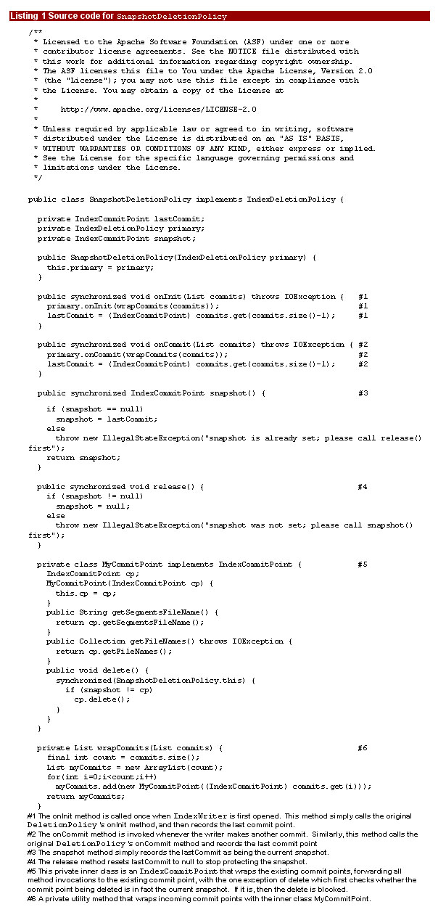

Restoring or replicating the index |
|---|
| When it’s time to restore the index, follow this procedure: |
1. Make sure all IndexReaders and IndexWriters on the index directory are closed. NOTE 3. Copy the files from your backup into the index directory. |
WARNING |
This same approach can easily be used to efficiently replicate the index to other computers, for example, if you have a high search load and distribute searches across multiple search servers. |
| Technical details |
Let's dig into how SnapshotDeletionPolicy actually works. To do that, we first need to understand Lucene's elegant segmented architecture. Figure 1 shows the structure of a Lucene index. The index is stored in separate pieces, each containing a complete index for a subset of the documents. Each segment can have many files associated with it, depending upon whether you are using the compound file format. A new segment is created when IndexWriter's buffer is flushed. Periodically, according to the MergePolicy and MergeScheduler in use by your application, segments are merged together, at which point one new segment is created and the old merged segments are removed. |
 |
Figure 1: A Lucene index is composed of separate, independent segments, each holding a full index for a subset of the documents. A commit point (each segments_N file) references a list of segments that make up the index as it exists at that commit. |
| Finally, and this is the key point, a separate file named segments_N, where N is an integer, holds references to those segments that make up a given commit point (IndexCommitPoint). Every time the writer commits to the index, N is increased by 1. These files are called commit points because a new one is created whenever the writer commits a change to the index. Lucene first writes all new files for a segment, and only when that is successful, writes a new segments_N file referencing that segment and de-referencing any segments that were just merged. |
As of release 2.1, the IndexDeletionPolicy was factored out from IndexWriter, enabling you to customize when an old commit point gets deleted. This is useful for certain filesystems, notably NFS, that do not protect open files from being deleted. Whenever the IndexWriter creates a new commit point, it consults the deletion policy to decide which older commit points should then be deleted. The default policy is KeepOnlyLastCommitDeletionPolicy, which removes the previous commit point whenever a new commit is done. |
Listing 1 shows the source code for SnapsotDeletionPolicy. You can see that it is surprisingly simple (less than 100 lines). Thanks to the fact that Lucene is open-source, with the liberal Apache Software Foundation License, you can see and modify any of Lucene’s sources. SnapshotDeletionPolicy simply wraps an existing IndexDeletionPolicy. When you make a snapshot, it grabs the current commit point and holds a reference to it, preventing IndexWriter from removing it. Once you release the commit point, then the next time IndexWriter commits a change to the index, that commit point and any resulting unreferenced files will be removed. |
|  |
Page 2 |